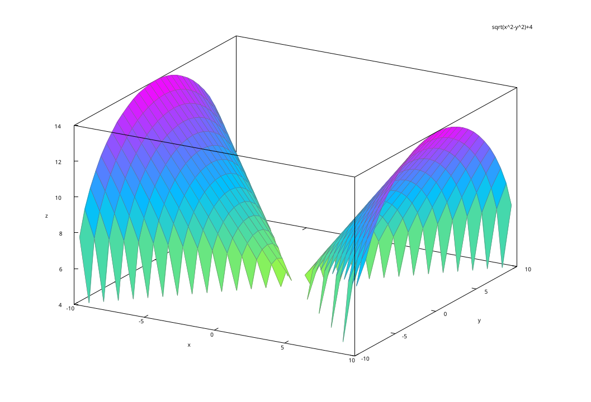
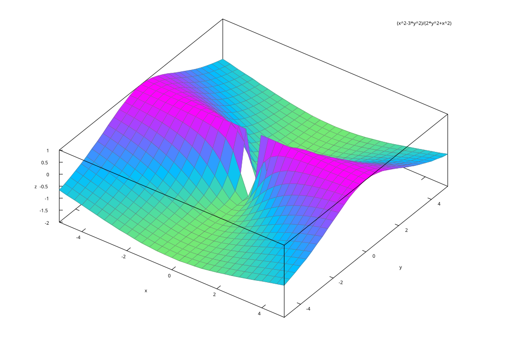

Una función de una variable es una regla de correspondencia que asigna a cada elemento \(x\) en el subconjunto \(X\) de números reales (llamado dominio de \(f\)), uno y solo un número real \(y\) en otro conjunto de números reales \(Y\) (llamado rango de \(f\)).
A la variable que que definamos como la que conforma el dominio le conocemos como la variable independiente, mientras que la variable incluída en el conjunto \(Y\) se le nombra variable dependiente.
Una función de dos variables es una regla de correspondencia que asigna a cada par de números reales (\(x\), \(y\)), uno y solo un número real \(z\) dentro del conjunto de valores \(R\), correspondientes a la variable dependiente.
Solo debe haber una variable dependiente mientras puede haber infinidad de independientes.
Una función polinomial de dos variables consiste en la suma de potencias \(x^m y^n\), donde \(m\) y \(n\) son enteros no negativos. Por ejemplo:
\[f(x,y)=xy-5x^2+9\]
El cociente de dos funciones polinomiales se denomina función racional. Por ejemplo:
\[f(x,y)=\frac{1}{xy-3y}\]
El dominio de una función polinomial es el plano \(xy\) completo.
El dominio de una función racional es el plano \(xy\), excepto los pares de números que vuelvan nulo al denominador.
Hagamos un breve repaso de las funciones simples, para así pasar a las de varias variables. Por ejemplo, tomemos la función \(f(x)=3x^2+4x\) y evaluemos \(f(5)\) y \(f(-7)\):
\[ f(5)=3(5)^2+4(5)=75+20=95 \]
\[ f(-7)=3(-7)^2+4(-7)=147-28=119 \]
Sympy es una librería de Python que sirve para realizar operaciones matemáticas simbólicas de alto nivel. Puede instalarse utilizando el comando recomendado para el sistema operativo que usemos. Por ejemplo, para Windows:
Al tenerla instalada, podemos cargar Sympy de la manera usual:
Los comandos necesarios para crear una función en Sympy pasan por crear primero la variable simbólica. Para ello, primero:
Y para valuar la función, escribimos su nombre con el valor de la variable independiente como argumento:
Podemos expresar el resultado sin que sea una fracción:
Primero preparemos la función simbólica:
Valuemos la función para los tres pares de valores propuestos:
Para los puntos 2 y 3, tendremos que confiar en nuestra capacidad de análisis, ya que Sympy no puede graficar funciones bivariables ni calcular el dominio y rango de estas funciones.
Lo que sí puede es encontrar las singularidades de la función para cada variable:
print("Singularidades respecto x: ", sp.calculus.singularities(f(x,y), x))
print("Singularidades respecto y: ", sp.calculus.singularities(f(x,y), y))
Rx = sp.calculus.util.function_range(f(x,1), x, sp.Reals)
Ry = sp.calculus.util.function_range(f(1,y), y, sp.Reals)
Ryn = sp.calculus.util.function_range(f(-1,y), y, sp.Reals)
display(Rx)
display(Ry)
display(Ryn)Singularidades respecto x: EmptySet
Singularidades respecto y: EmptySet\(\displaystyle \left[4, \infty\right)\)
\(\displaystyle \left[4, 5\right]\)
\(\displaystyle \left[4, 5\right]\)
Contrario a Python, Maxima es un paquete especializado en cálculo simbólico, por lo que sí puede calcular dominios y rangos para funciones multivariable. Veamos una breve introducción con los comandos más útiles.
Para definir una función y valuarla, hacemos lo siguiente:
Y al ejecutar la orden Maxima nos devolverá lo que entendió. Notemos que si estamos en wxMaxima (lo más común si trabajamos en Windows), el comando es Ctrl+IntroCtrl+Intro. Si coincide con lo que queremos decir, estamos listos.
Para ver cómo valuar funciones en Maxima, hagámoslo con uno de los propuestos anteriormente, encontremos \(f(4,-2)\).
Al ejecutar nos devolverá \(2\sqrt{3}+4\). Si deseamos que Maxima nos dé valores numéricos, debemos agregar el argumento numer:
Si deseamos modificar una función, solo debemos volver a ejecutarla. Si deseamos borrar una función de memoria, debemos matarla:
Y si deseamos borrar el entorno completo, lo matamos todo:
Muy útiles para deducir el dominio y rango de funciones. Para nuestro ejemplo, podríamos probar con
Devolviendo:

En funciones simples, la existencia del límite puede calcularse de varias formas, dependiendo de si la función es continua o no. Si lo es, la mera sustitución de valores funciona para confirmar (o no) su existencia.
Recordemos que la existencia de un límite se confirma si la aproximación por todas trayectorias da el mismo valor \(L\).
En funciones bivariables, la definición de la existencia de un límite implica comprobar que obtenemos un mismo valor \(L\) tras acercarnos siguiendo dos trayectorias diferentes. Un par de rutas aceptable, pero no el único, es seguir los ejes \(x\) y \(y\). Veamos un ejemplo.
Ejemplo 1. Demostremos que no existe el límite:
\[ \lim_{(x,y) \to (0,0)} \frac{x^2-3y^2}{x^2+2y^2} \]
Sustituyendo los valores a los que tiende cada variable obtenemos:
\[ \lim_{(x,y) \to (0,0)} \frac{x^2-3y^2}{x^2+2y^2}=\frac{0}{0} \]
Esto, aunque parezca cumplir la condición, no lo hace. Recordemos que la división por cero no existe, por lo que este resultado no nos permite una conclusión.
Cambiemos el enfoque.
Hagamos la sustitución de una variable a la vez, es decir, acercarnos siguiendo los ejes coordenados. Primero con \(y\):
\[ \lim_{(x,0) \to (0,0)} f(x,0) = \lim_{(x,0) \to (0,0)} \frac{x^2-0}{x^2+0}=1 \]
Ahora con \(x\):
\[ \lim_{(0,y) \to (0,0)} f(0,y) = \lim_{(0,y) \to (0,0)} \frac{0-3y^2}{0+2y^2}=-\frac{3}{2} \]
Podemos confirmar que el límite no existe, pues ambos resultados son diferentes.
Confirmando con Maxima (ejecutar cada comando individualmente):

Demostremos que el límite no existe
\[ \lim_{(x,y) \to (0,0)} \frac{xy}{x^2+y^2} \]
Podemos probar con el enfoque anterior. No funcionará. Recordemos que una recta se define por \(y=mx\).
Demostremos que el límite no existe
\[ \lim_{(x,y) \to (0,0)} \frac{x^3y}{x^6+y^2} \]
Evalúe:
\[ \lim_{(x,y) \to (2,3)} f(x+y^2) \]